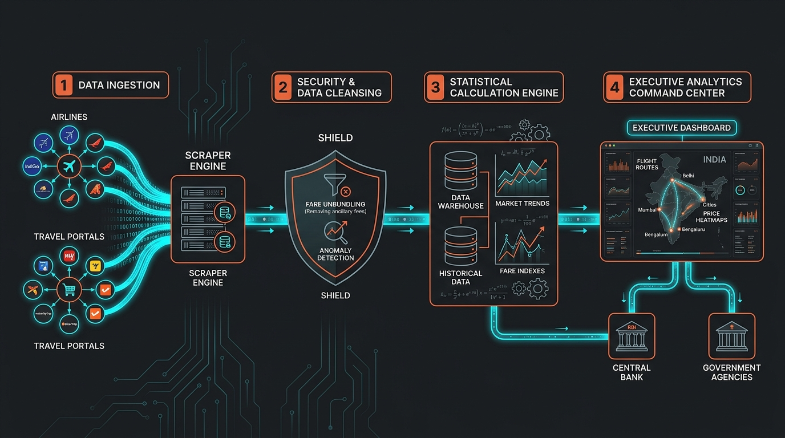

Pictorial Pipeline
The 4-Stage Data Flow Pipeline

🔍 Click to Open Fullscreen Lightbox
Stage 1 • Ingest
🌐
11 Portals
Two-Stage Harvester
Fast XHR JSON sniffing (curl_cffi JA3) + Playwright stealth for Akamai & Cloudflare.
EaseMyTrip, Ixigo
<800ms
IndiGo, MakeMyTrip
Stealth
Stage 2 • Audit
🛡️
15 Filters
15-Edge-Case Gauntlet
Isolates Pure Base + Fuel (YQ), strips MMT ₹499 drip fees, harmonizes 7kg Lite baggage, and applies IQR bounds.
Pure Economic Fare
Base + YQ
IQR Price Bounds
₹1.5k–₹35k
Stage 3 • Compute
📈
2024 = 100
Laspeyres Engine
Official DGCA passenger weights across 12 corridors & 5 booking horizons (T+1 to T+45) stored in SQLite / Supabase.
12 Corridors Weight
W_i = 1.000
Fail-Safe Cache
100% Demo
Stage 4 • Deliver
🏛️
FastAPI / UI
MoSPI Command Center
Real-time route heatmaps, dynamic surge alarms, and automated JSON feeds for the Reserve Bank of India (RBI).
MoSPI / NSO
CPI Transport
RBI MPC
Repo Rate
Circuit Breaker Watchdog:
All 11 Portals HEALTHY (CLOSED)